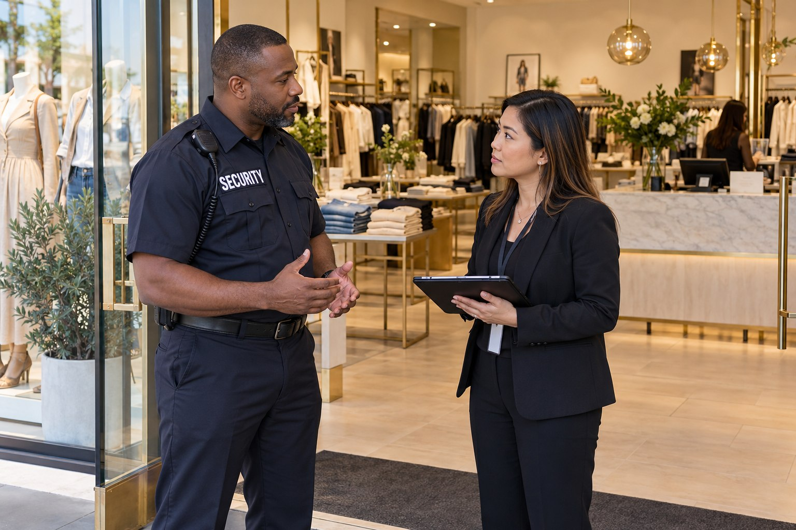

Malls and Shopping Centers

A shopping center contains more than individual stores. Walkways, entrances, parking areas and shared amenities are part of the customer and employee experience. Paradigm’s shopping center security addresses those common spaces and gives management a defined point of contact for security concerns. The service can support both enclosed malls and outdoor retail centers.
Security for Shared Retail Environments
The setting affects the expectations of the assignment. An indoor mall brings interaction with shoppers across shared interior space. An outdoor center may involve businesses with separate entrances and common parking. The service is reviewed in relation to the actual property, the tenants and the responsibilities that management needs covered.
Common Areas and Parking Facilities
Officers can provide uniformed observation of shared areas and parking facilities included in the assignment. They can communicate with management about disturbances, unauthorized access concerns and incidents affecting shoppers or employees. A visible security contact can also help people know where to direct concerns while they are on the property.
Parking lots and structures are not automatically covered by a store’s interior loss prevention service. Paradigm distinguishes property wide responsibilities from those within a particular tenant space. This clarity matters when management and retailers are reviewing who should receive reports and which security team is responsible for the concern being raised.
Support for Management and Retail Tenants
Shopping center security can coordinate with center management, tenant representatives and local police when necessary. Incident documentation records relevant observations and actions so the client can review what occurred. Tenant loss prevention support can be reviewed separately when the issue involves suspected theft inside a store.
The assignment should support the shopping environment without treating every shopper as a security concern. Professional interaction, clear boundaries and communication with the client are central to the role. BSIS publishes California security guard registration requirements. The official reference helps clients understand the registration framework for private security personnel.
Shopping Center Security Across Both Counties
Paradigm serves retail properties in Los Angeles County and San Bernardino County, including regional malls, neighborhood shopping centers and smaller retail properties. Coverage is considered around the property’s actual responsibilities rather than a generic description of mall security. Armed, unarmed, patrol and loss prevention needs can be reviewed according to their separate purposes.
Contact Paradigm to describe your shopping center and the concerns affecting your tenants, shoppers or employees. We will review common area responsibilities, the relationship with tenant security and the support required by property management. Sensitive details about the site remain part of the private consultation.